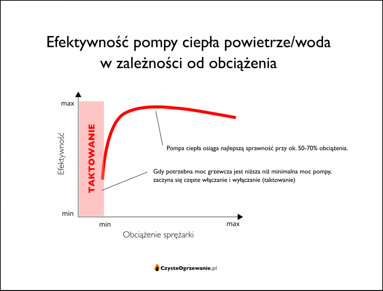
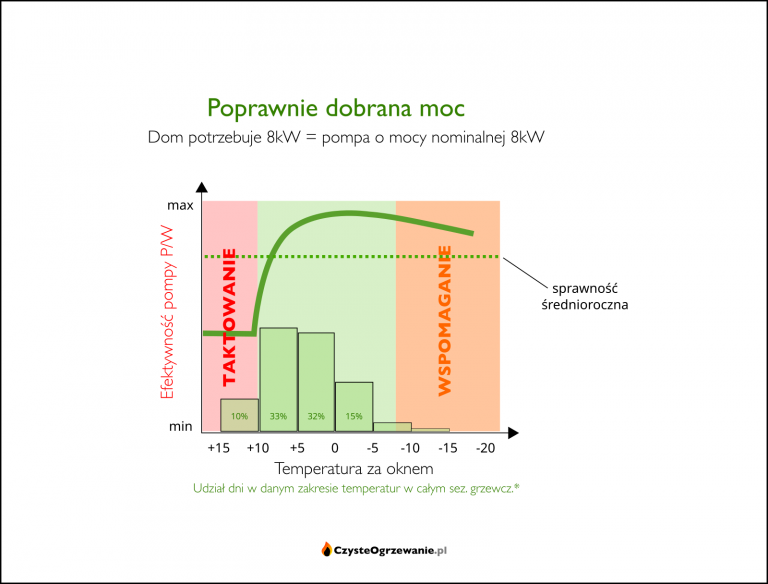
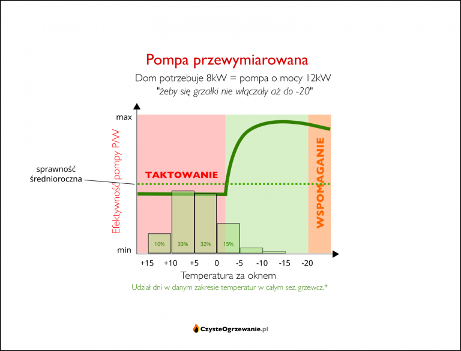

Jaką pompę ciepła wybrać ?
Jaką moc dobrać ?
Wszystkiego dowiesz się w poniższym artykule, który przygotowaliśmy, a jeśli nie uzyskasz tu odpowiedzi to zawsze czekamy na kontakt od Ciebie!
Nie cena, kolor czy marka, lecz właściwy dobór mocy pompy ciepła jest kluczowy dla zadowolenia z jej posiadania. Możesz kupić powietrzną pompę ciepła z najwyższej półki, ale jeśli jej moc będzie zbyt duża w stosunku do potrzeb budynku (z inżynierska: przewymiarowana), to po pierwszej zimie i rachunku z elektrowni rzucisz nią za psami a następne kilka lat będziesz opowiadać znajomym, jakim to humbugiem są pompy ciepła.
Powietrzne pompy ciepła zdobywają rynek – słusznie, bo są coraz tańsze i lepsze, a i grzać mogą tanio. Niestety już widać, że i do tej branży przenosi się rak przewymiarowania – włazi tutaj razem z zainfekowanymi fachofcami, którzy po latach montowania ludziom przewymiarowanych kotłów węglowych, teraz chcą montować ludziom tak samo przewymiarowane pompy ciepła. Na Odyna, niechaj się w porę opamiętają i douczą. A jeśli nie są do tego zdolni, to chociaż ty, kliencie, zobacz czym grozi przewymiarowanie powietrznej pompy ciepła i jeśli spostrzeżesz, że ktoś chce cię tak zrobić na szaro – omijaj partacza szerokim łukiem jeśli szanujesz swoje pieniądze i nerwy. Może głód przekona takich delikwentów do dokształcenia się lub zmiany branży.
Jakiej mocy grzewczej potrzebuje budynek
Pierwszy krok żeby w ogóle myśleć o doborze mocy powietrznej pompy ciepła to oszacowanie zapotrzebowania budynku na moc grzewczą.
Rozsądne opcje to:
- zlecenie profesjonalnego audytu OZC (koszt: kilkaset złotych)
- przybliżone obliczenia na cieplowlasciwie.pl
Najlepsza (najdokładniejsza) jest opcja nr 1. Niestety jest też skomplikowana, wymaga wiedzy, dlatego trochę kosztuje. Opcja nr 2 jest mniej dokładna, ale wciąż pomocna w oszacowaniu potrzebnej mocy pompy ciepła z sensowną dokładnością. Korzysta z niej wiele firm montujących pompy ciepła (może dlatego, że jest darmowa 😉 ).
Jeśli dany fachman nie odeśle cię do w/w serwisu ani sam nie wykona choćby przybliżonych obliczeń a od razu ma gotową odpowiedź typu: na 100mkw. to panie będzie 10kW minimum – bierz nogi za pas, bo to znak, że dobiera moc od czapy, czyli z ogromnym zapasem.
Jak dobrać moc pompy ciepła do potrzeb budynku
Kiedy już znasz potrzebną moc grzewczą – dalej jest z górki:
Budynek potrzebuje 8kW mocy grzewczej – wybierasz pompę ciepła o mocy nominalnej max. 8kW.
Dlaczego "max."? Bo każdy kilowat więcej to kopniak w średnioroczną sprawność.
Mniejszym problemem będzie w tym przypadku pompa o mocy 6-7kW niż 9-10kW. Nieco za mała pompa wcześniej będzie potrzebowała wspomagania dodatkowym źródłem ciepła – niewiele jest dni w zimie, które tego wymagają. Za to dobrze sobie poradzi w dni cieplejsze, które w sezonie grzewczym przeważają. Natomiast pompa zbyt duża będzie miała gorszą sprawność w dni cieplejsze.
Dlaczego przewymiarowanie powietrznej pompy ciepła jest tak wielkim problemem
Jak każdy kocioł, również pompa ciepła ma swoją moc nominalną i zakres modulacji mocy. Wygląda to niby trochę inaczej niż w kotle np. węglowym – ale tak naprawdę problemy są bardzo podobne.
Co tu jest najistotniejsze? Ten gwałtowny spadek sprawności około/poniżej mocy minimalnej. Gdy pompa nie jest w stanie pracować ciągle, bo budynek potrzebuje mniej ciepła niż pompa produkuje na najniższym swoim biegu, wtedy zaczyna się taktowanie, czyli praca z częstymi załączeniami i zatrzymaniami. Tak samo zachowują się kotły gazowe i węglowe. One również mają w tym zakresie pracy najgorsze sprawności.
{kind=link}
W pompie ciepła nie dość, że sprawność przy częstym taktowaniu jest fatalna, to jeszcze odbija się na żywotności urządzenia, gdyż rozruch jest momentem największego zużycia sprężarki. To jak jazda autem spalinowym na krótkie dystanse.
Teraz na powyższe nałóżmy rozkład temperatur w sezonie grzewczym. Tak to będzie wyglądało dla poprawnie dobranej mocą pompy ciepła:
Wszystko do siebie zaskakująco pasuje: najwięcej dni sezonu grzewczego wypada w zakresie obciążeń, w którym pompa ciepła ma najlepszą sprawność. Przypadek? Gdzie tam! Tak to zostało zaprojektowane.
A teraz zobaczmy, jaki los sobie gotuje ktoś pełen dobrych intencji, chcący przewymiarować pompę ciepła, aby nie pokąsały go te straszne grzałki. Załóżmy, że wziął pompę o 50% za dużą:
Cel osiągnięty: dodatkowe źródło ciepła nigdy nie będzie potrzebne. Tylko co z tego, skoro mimo to rachunek za prąd będzie bolesny! Ale jako to? Ano tak: przewymiarowanie pompy w celu "ucieczki przed grzałkami" spowodowało, że pompa większej mocy przez większość sezonu grzewczego będzie musiała taktować. Potrzeby budynku będą bowiem zbyt małe, aby mogła pracować ciągle choćby na minimum mocy. W ciągłą pracę wejdzie dopiero w mrozy – ale to mniejsza część sezonu grzewczego.
Skutkiem tego średnioroczna sprawność poleci na twarz w porównaniu do sytuacji gdzie moc pompy ciepła dobrano poprawnie.
Wszystko w skrócie na jednej grafice:
Pozornie logiczne acz błędne przesłanki dla przewymiarowania pompy ciepła
Każdy kocioł o danej mocy nominalnej jest w stanie uzyskać taką samą moc nominalną rano i wieczorem, taką samą w grudniu, czerwcu i każdym innym miesiącu. A powietrzna pompa ciepła jest dziwna – inną ma moc w grudniu, inną w marcu. Nie jest to dobra zmiana: akurat gdy potrzeby grzewcze budynku rosną, to wydolność pompy ciepła spada. Aż wreszcie tam przy -20 stopniach z początkowych np. 10kW zostają jakieś marne 2kW i to jeszcze przy sprawności nieznacznie wyższej od zwykłej grzałki.
W reakcji na te fakty sporo ludzi zaczyna kombinować jak koń pod górę. Nie wynika z tego nic dobrego.
Chcą ogrzać dom wyłącznie pompą ciepła zawsze i wszędzie
Niektórzy nie chcą się pogodzić z tym, że wraz z pompą ciepła muszą zainstalować dodatkowo grzałki, kocioł gazowy, kominek albo dowolne inne pomocnicze źródło ciepła.
Powietrzna pompa ciepła z natury potrzebuje pomocniczego źródła ciepła na najtęższe mrozy. Spadek mocy i sprawności takich pomp ciepła wraz ze spadkiem temperatury powietrza ma swoje korzenie w prawach fizyki i nigdy nie zostanie całkowicie wyeliminowany bez skutków ubocznych.
Pomocnicze źródło ciepła wchodzi do gry zwykle w okolicach -7 st.C za oknem i wspomaga lub całkiem przejmuje zadanie ogrzewania domu w takich warunkach, gdzie pompa ciepła radzi sobie coraz gorzej albo i wcale.
Co poniektórym się wydaje, że jeśli wezmą odpowiednio większej mocy pompę ciepła, to jej moc w tęgi mróz dalej będzie nadal wystarczająca do ogrzania domu. To technicznie możliwe – ale konsekwencje przewymiarowania odbiją się potężną czkawką w cieplejsze dni (które stanowią 2/3 sezonu grzewczego). Zupełnie jak to było z kotłami węglowymi. Historia uczy, że nikogo niczego nie uczy.
Boją się grzałek
Wobec grzałek w roli pomocniczego źródła ciepła czujemy szczególny rodzaj atawistycznego lęku:
- że licznik prądu się zagrzeje od wysokich obrotów a przez konto bankowe przejdzie tornado, które wessie połowę wypłaty,
- że akurat w mrozy prądu niet i zamarzniemy.
Druga z tych obaw jest jak najbardziej racjonalna. Dobrze jest oprzeć zapasowe źródło ciepła o inne medium niż prąd – szczególnie tam, gdzie awarie prądu są częste. Niech to będzie gaz, kocioł na węgiel/drewno/pellet albo kominek. Większa niezawodność i zapobiegliwość nikomu jeszcze nie zaszkodziły.
Natomiast lęki przed wysokimi rachunkami spowodowanymi przez dogrzewanie się grzałkami w tęgie mrozy są bezpodstawne:
- tęgie mrozy nawet w trakcie klasycznych zim stanowią co najwyżej kilkanaście dni – nikły procent całego sezonu grzewczego, więc nie ma to istotnego wpływu na ogólny koszt ogrzewania.
- gdyby nawet pompę ciepła zmusić do pracy przy -20 stopniach (część firm chwali to jako zaletę: "pompa pracuje przy -20 st." – zwykle nie mówiąc, z jaką sprawnością i mocą) to jej sprawność będzie niewiele lepsza od osiągów grzałki.
Ale przecież są takie pompy ciepła których moc nie spada w mrozy
Odpowiedź jest prosta: zostały w pewien sposób fabrycznie przewymiarowane. Może to być zrobione mniej lub bardziej finezyjnie, ale praw fizyki tak do końca oszukać się nie da. Jeśli polepsza się osiągi przy -10, to pogorszą się osiągi przy +10. Niestety producenci pomp ciepła podkreślają plusy a skrzętnie ukrywają minusy swoich kombinacji.
Uszy mnie swędzą gdy pompa ciągle pracuje
Nie chodzi tu bynajmniej o hałas. Są ludzie, których swędzi albo nawet boli kiedy jakieś urządzenie pracuje na okrągło, bo im się wydaje, że wtedy pieniądze uciekają.
- kiedyś nie mogli ścierpieć jak wiatrak w kotle zasypowym się kręcił "bo wydmuchiwał ciepło", więc wstawiali kocioł trzy razy większy, bo wtedy rzadziej się kręciło;
- potem ich bolało jak palnik na węgiel lub pellet pracował cały czas z małym płomieniem – nie, lepiej niech przykituje do czerwoności przez godzinę a potem resztę dnia stoi i dymi albo się wygasi by potem grzałka-rozpalarka 1500W miała co robić;
- a teraz pewnie szlag ich trafi na pompę ciepła która by pracowała non stop – nie, wstawmy dwa razy większą, niech się raz na dobę włącza.
Jest to problem czysto psychologiczny, ufundowany na deficycie wiedzy i zaimpregnowany niechęcią do poznawania świata, co czasem wiąże się z mało przyjemną koniecznością przyznania przed samym sobą, że czegoś się nie wiedziało lub źle to rozumiało.
Fakty są takie, że w przypadku każdego rodzaju kotła lub pompy ciepła ciągła praca w zakresie modulacji jest korzystniejsza niż wszelkie sterowanie włącz/wyłącz. Oczywiście nie każdy musi się z tym zgadzać skoro i co do kształtu Ziemi wciąż są wątpliwości. Na szczęście koszty tego będzie ponosił wyłącznie na własnej skórze. O ile źle dobrane i źle użytkowane kotły węglowe były śmierdzącymi zakałami okolicy – o tyle źle dobrane pompy ciepła nie dymią, nie śmierdzą, a jedynie przejadają znacznie więcej pieniędzy z kieszeni właściciela.
Dobór mocy pompy ciepła do ogrzewania
Nie cena, kolor czy marka, lecz właściwy dobór mocy pompy ciepła jest kluczowy dla zadowolenia z jej posiadania. Możesz kupić powietrzną pompę ciepła z najwyższej półki, ale jeśli jej moc będzie zbyt duża w stosunku do potrzeb budynku (z inżynierska: przewymiarowana), to po pierwszej zimie i rachunku z elektrowni wyrzucisz ją a następne kilka lat będziesz opowiadać znajomym, jakim to humbugiem są pompy ciepła.
Jakiej mocy grzewczej potrzebuje budynek
Pierwszy krok żeby w ogóle myśleć o doborze mocy powietrznej pompy ciepła to oszacowanie zapotrzebowania budynku na moc grzewczą.
Rozsądne opcje to:
Najlepsza (najdokładniejsza) jest opcja nr 1. Niestety jest też skomplikowana, wymaga wiedzy, dlatego trochę kosztuje. Opcja nr 2 jest mniej dokładna, ale wciąż pomocna w oszacowaniu potrzebnej mocy pompy ciepła z sensowną dokładnością. Korzysta z niej wiele firm montujących pompy ciepła (może dlatego, że jest darmowa 😉 ). Jeśli dany fachman nie odeśle cię do w/w serwisu ani sam nie wykona choćby przybliżonych obliczeń a od razu ma gotową odpowiedź typu: na 100mkw. to panie będzie 10kW minimum – bierz nogi za pas, bo to znak, że dobiera moc od czapy, czyli z ogromnym zapasem.
Jak dobrać moc pompy ciepła do potrzeb budynku
Kiedy już znasz potrzebną moc grzewczą – dalej jest z górki:
Budynek potrzebuje 8kW mocy grzewczej – wybierasz pompę ciepła o mocy nominalnej max. 8kW.
Dlaczego "max."? Bo każdy kilowat więcej to kopniak w średnioroczną sprawność.
Mniejszym problemem będzie w tym przypadku pompa o mocy 6-7kW niż 9-10kW. Nieco za mała pompa wcześniej będzie potrzebowała wspomagania
dodatkowym źródłem ciepła – niewiele jest dni w zimie, które tego wymagają. Za to dobrze sobie poradzi w dni cieplejsze, które w sezonie
grzewczym przeważają. Natomiast pompa zbyt duża będzie miała gorszą sprawność w dni cieplejsze.
Dlaczego przewymiarowanie powietrznej pompy ciepła jest tak wielkim problemem
Jak każdy kocioł, również pompa ciepła ma swoją moc nominalną i zakres modulacji mocy. Wygląda to niby trochę inaczej niż w kotle np. węglowym – ale tak naprawdę problemy są bardzo podobne.
Co tu jest najistotniejsze? Ten gwałtowny spadek sprawności około/poniżej mocy minimalnej. Gdy pompa nie jest w stanie pracować ciągle, bo budynek potrzebuje mniej ciepła niż pompa produkuje na najniższym swoim biegu, wtedy zaczyna się taktowanie, czyli praca z częstymi załączeniami i zatrzymaniami. Tak samo zachowują się kotły gazowe i węglowe. One również mają w tym zakresie pracy najgorsze sprawności.
W pompie ciepła nie dość, że sprawność przy częstym taktowaniu jest fatalna, to jeszcze odbija się na żywotności urządzenia, gdyż rozruch jest momentem największego zużycia sprężarki. To jak jazda autem spalinowym na krótkie dystanse.
Teraz na powyższe nałóżmy rozkład temperatur w sezonie grzewczym. Tak to będzie wyglądało dla poprawnie dobranej mocą pompy ciepła:
Wszystko do siebie zaskakująco pasuje: najwięcej dni sezonu grzewczego wypada w zakresie obciążeń, w którym pompa ciepła ma najlepszą sprawność. Przypadek? Gdzie tam! Tak to zostało zaprojektowane.
A teraz zobaczmy, jaki los sobie gotuje ktoś pełen dobrych intencji, chcący przewymiarować pompę ciepła, aby nie pokąsały go te straszne grzałki. Załóżmy, że wziął pompę o 50% za dużą:
